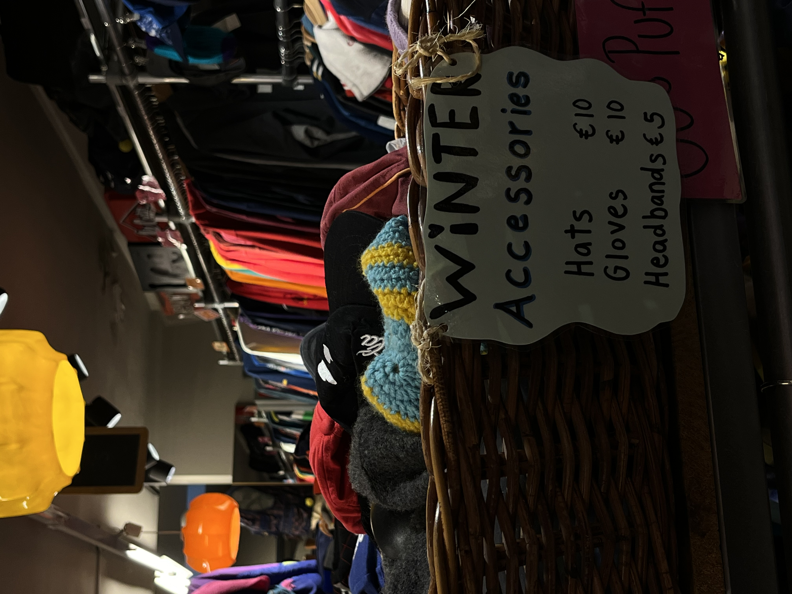

Fashion Styles
Fashion styles from decades ago are becoming more and more popular everyday. In the store there is a whole section dedicated to clothes inspired by the 70s! These range from dresses to blouses and so much more. Grab your shopping bag and walk out of the store like a 70s fashion icon!
In the Kilo Store we have multiple sections dedicated to country fashion. From cowgirl to cowboy corners and country style boots that really capture the western aesthetic. Dive into the Kilo Store and get inspired by the wide range of country fashion they have!
The winter is becoming more and more harsh each year. Take a look at the baskets full of cozy winter accesoires and keep yourself warm!
Of course there is also a whole section dedicated to these raw leather jackets. It might not be real eather but that doesn't make them any less fashionable. These jackets can be combined with a wide range of different styles and are perfect to use during spring or fall!